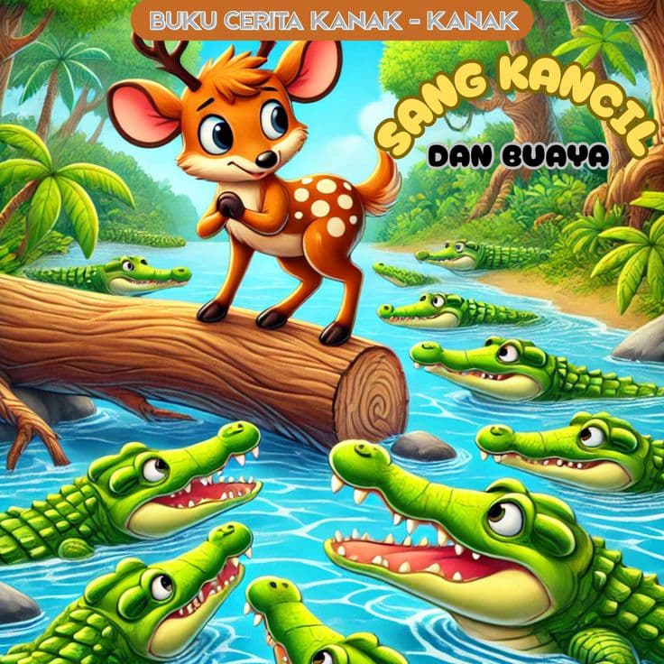

Si Kancil dan Buaya
klik untuk tau kisah lengkapnya...

Pada suatu hari yang cerah, Si Kancil berjalan-jalan di hutan. Ia merasa sangat lapar. Di seberang sungai, ia melihat ladang timun yang subur dan segar. Tapi masalahnya, ia harus menyeberangi sungai yang penuh dengan buaya.Si Kancil bukan hewan biasa. Ia dikenal cerdik dan pintar mencari akal. Ia pun mulai menyusun rencana.
"Buaya-buaya sekalian!" teriak Kancil dari tepi sungai.
Seekor buaya besar muncul ke permukaan. "Ada apa, Kancil? Mau jadi makan siang kami, ya?"
"Ah, bukan begitu," jawab Kancil santai. "Aku datang membawa kabar baik. Raja hutan ingin memberikan hadiah besar untuk kalian semua karena jumlah kalian yang banyak dan kuat. Tapi, aku harus menghitung kalian dulu."
Buaya itu tertarik. "Benarkah? Wah, baiklah! Bagaimana kau akan menghitung kami?"
"Mudah," kata Kancil. "Kumpulkan semua buaya di sungai, berbarislah dari tepi sungai ini sampai ke seberang sana. Aku akan melompati kalian satu per satu sambil menghitung.",Tanpa curiga, para buaya menurut. Mereka berbaris rapi dari tepi sungai hingga ke seberang.
Kancil pun mulai melompat di atas punggung buaya, sambil menghitung keras-keras. "Satu... dua... tiga... empat..."
Sampai akhirnya ia mencapai seberang sungai.
"Terima kasih, Buaya! Kalian memang hebat! Sekarang aku bisa makan timun segar di sana!" Para buaya sadar mereka ditipu.
"Hei! Kau menipuku, Kancil!" teriak buaya yang paling besar.
Kancil hanya tertawa dari kejauhan, “Kalian harus lebih hati-hati lain kali. Jangan terlalu mudah percaya!”
Pesan Moral:
Gunakan kecerdikan dengan bijak, tetapi jangan mudah percaya begitu saja pada janji yang terdengar manis tanpa berpikir dua kali.
Bawang Merah dan Bawang Putih
klik untuk tau kisah lengkapnya...
Pada zaman dahulu, hiduplah seorang janda bersama dua anak gadisnya. Anak kandungnya bernama Bawang Merah, sedangkan anak tirinya bernama Bawang Putih. Bawang Putih adalah gadis yang baik hati, jujur, dan rajin. Sebaliknya, Bawang Merah sangat pemalas, suka iri hati, dan sering berlaku buruk kepada Bawang Putih. Ibu Bawang Merah juga selalu membela anak kandungnya dan memperlakukan Bawang Putih dengan semena-mena. Setiap hari, Bawang Putih harus mengerjakan semua pekerjaan rumah, sementara Bawang Merah hanya bermalas-malasan.
Suatu hari, Bawang Putih disuruh ibunya mencuci pakaian di sungai. Namun tanpa sengaja, sehelai kain milik ibunya hanyut terbawa arus. Bawang Putih pun panik dan menyusuri sungai untuk mencarinya. Di tengah perjalanan, ia bertemu dengan seorang nenek tua yang tinggal di gubuk sederhana. Nenek itu berkata bahwa kain yang hanyut berada padanya, dan akan mengembalikannya jika Bawang Putih bersedia membantu membersihkan rumah. Dengan tulus dan tanpa mengeluh, Bawang Putih membantu sang nenek hingga rumah bersih dan rapi.
Sebagai hadiah atas kebaikannya, sang nenek memberikan dua pilihan: sebuah labu kecil atau sebuah labu besar. Karena tidak serakah, Bawang Putih memilih labu yang kecil. Sesampainya di rumah, labu itu dibelah dan ternyata berisi emas dan permata. Ibu tiri dan Bawang Merah sangat iri melihat kekayaan yang didapatkan Bawang Putih. Dengan niat serakah, mereka pun melakukan hal yang sama. Mereka sengaja membuang kain ke sungai, lalu mencari nenek tua itu. Namun, saat diminta membantu, mereka bersikap kasar dan malas. Meski begitu, mereka tetap meminta labu yang besar sebagai hadiah.
Sesampainya di rumah, mereka membelah labu itu dengan penuh harap. Namun betapa terkejutnya mereka ketika isinya bukan emas, melainkan ular, kalajengking, dan binatang berbisa lainnya. Mereka pun menjerit ketakutan dan menyesali perbuatan buruk yang telah mereka lakukan. Sejak saat itu, ibu tiri dan Bawang Merah tidak lagi bersikap semena-mena, dan mereka mulai belajar menjadi lebih baik.
Pesan Moral:
Orang yang jujur, sabar, dan rajin akan mendapatkan kebaikan di akhir, sementara orang yang pemalas, serakah, dan jahat akan mendapat balasan atas perbuatannya.
Timun Mas
klik untuk tau kisah lengkapnya...
Pada zaman dahulu, hiduplah seorang janda tua bernama Mbok Rondo yang tinggal di sebuah desa dekat hutan. Ia sangat mendambakan seorang anak, namun usianya sudah tua. Suatu hari, saat sedang berdoa memohon kepada Tuhan agar diberikan anak, datanglah raksasa yang menawarkannya bantuan. Sang raksasa berkata, "Aku bisa memberimu anak, tapi saat anak itu berusia 17 tahun, kau harus menyerahkannya padaku." Karena sangat ingin memiliki anak, Mbok Rondo pun menyetujuinya.
Beberapa hari kemudian, Mbok Rondo menemukan sebuah biji mentimun emas di kebunnya. Ia menanam biji itu, dan tumbuhlah sebuah mentimun besar. Saat dibelah, ternyata di dalamnya terdapat seorang bayi perempuan cantik. Bayi itu diberi nama Timun Mas. Mbok Rondo sangat menyayanginya dan merawatnya dengan penuh cinta. Tahun demi tahun berlalu, Timun Mas tumbuh menjadi gadis yang baik, cerdas, dan pemberani.
Namun, janji tetaplah janji. Saat usia Timun Mas menginjak 17 tahun, raksasa itu datang untuk menagihnya. Mbok Rondo yang sangat menyayangi anaknya tidak rela menyerahkannya. Ia pun pergi menemui seorang pertapa sakti di gunung untuk meminta bantuan. Sang pertapa memberinya empat bungkusan kecil berisi biji mentimun, jarum, garam, dan terasi, lalu berpesan agar bungkusan itu diberikan kepada Timun Mas sebagai senjata melawan raksasa.
Keesokan harinya, raksasa datang mengejar Timun Mas. Dengan cepat Timun Mas berlari sambil melemparkan isi bungkusan satu per satu. Pertama, ia melempar biji mentimun, dan seketika tumbuhlah hutan mentimun yang lebat dan tajam. Namun raksasa berhasil melewatinya. Lalu ia melempar jarum, berubah menjadi hutan bambu runcing yang melukai sang raksasa. Tapi raksasa terus mengejar. Timun Mas melempar garam, dan muncullah laut luas. Raksasa berenang melaluinya dengan susah payah. Terakhir, Timun Mas melempar terasi, yang berubah menjadi lautan lumpur panas dan mendidih. Kali ini raksasa tidak bisa lolos dan akhirnya tenggelam di dalamnya.Timun Mas pun selamat. Ia kembali ke pelukan Mbok Rondo, dan mereka hidup bahagia selamanya tanpa takut lagi pada raksasa.
Pesan Moral:
Selalu jaga janji, namun berjuanglah dengan bijak dan berani saat kebaikan dipertaruhkan. Keberanian, doa, dan akal bisa mengalahkan kekuatan sebesar apa pun.
Ande Ande Lumut
klik untuk tau kisah lengkapnya...
Pada zaman dahulu kala, hiduplah seorang janda dengan tiga orang putrinya yang cantik-cantik. Anak-anak itu sebenarnya adalah anak bangsawan, namun karena perang dan keadaan, mereka harus hidup sederhana di sebuah desa. Anak sulung bernama Kleting Abang, yang kedua Kleting Ijo, dan yang bungsu Kleting Kuning. Meski sama-sama cantik, ketiga kakaknya memiliki sifat sombong, iri, dan pemalas. Sementara itu, Kleting Kuning adalah gadis yang rajin, sopan, dan rendah hati.
Suatu hari, terdengar kabar bahwa seorang pangeran tampan bernama Ande-Ande Lumut sedang mencari calon istri. Ia akan memilih gadis terbaik yang datang ke istananya. Kabar ini membuat ketiga kakak Kleting Kuning sangat bersemangat. Mereka segera bersiap-siap, berdandan seindah mungkin, dan melarang Kleting Kuning ikut karena merasa adik mereka hanya akan mempermalukan mereka.
Namun diam-diam, Kleting Kuning tetap pergi. Ia mengenakan pakaian sederhana dan membawa bekal seadanya. Dalam perjalanan menuju istana, para gadis harus menyeberangi sungai yang dalam. Di sana tinggal seorang pemuda bernama Yuyu Kangkang, penjaga sungai yang terkenal iseng. Ia bersedia membantu para gadis menyeberang, tapi dengan syarat mereka harus menciumnya terlebih dahulu. Karena ingin cepat sampai ke istana, kakak-kakak Kleting Kuning pun menerima syarat itu dan membiarkan Yuyu Kangkang mencium mereka.
Saat Kleting Kuning tiba, Yuyu Kangkang juga menawarkan bantuan yang sama. Namun Kleting Kuning menolaknya dengan tegas dan mencari cara lain untuk menyeberangi sungai. Ia akhirnya berhasil menyeberang dengan bantuan orang tua yang baik hati dan tiba di istana dengan selamat.
Ketika keempat gadis itu sampai di hadapan Ande-Ande Lumut, sang pangeran langsung menolak ketiga kakak Kleting Kuning karena mereka sudah dicium Yuyu Kangkang, dan hanya menerima Kleting Kuning yang bersih dan tidak ternoda. Ande-Ande Lumut ternyata adalah penyamaran dari seorang pangeran yang bijak, dan ia langsung memilih Kleting Kuning sebagai istrinya. Mereka pun menikah dan hidup bahagia.
Pesan Moral:
Kecantikan luar tidaklah cukup, karena hati yang baik, ketegasan dalam menjaga kehormatan, dan sifat rendah hati jauh lebih berharga dan akan membawa kebahagiaan sejati.
Tangkuban Perahu
klik untuk tau kisah lengkapnya...
Pada zaman dahulu kala, hiduplah seorang putri cantik bernama Dayang Sumbi yang tinggal di sebuah kerajaan di Jawa Barat. Ia sangat suka menenun. Suatu hari, alat tenunnya jatuh ke bawah, dan karena malas mengambilnya, ia bersumpah bahwa siapa pun yang mengambilkan alat itu untuknya, akan dijadikannya suami jika laki-laki, atau anak jika perempuan. Ternyata, alat itu diambil oleh seekor anjing jantan bernama Tumang, yang sebenarnya adalah jelmaan dewa sekaligus penjaga kerajaan.
Karena sumpahnya sendiri, Dayang Sumbi akhirnya menikah dengan Tumang. Mereka dikaruniai seorang anak laki-laki bernama Sangkuriang. Sejak kecil, Sangkuriang tidak tahu bahwa ayahnya adalah Tumang. Suatu hari, saat berburu, Sangkuriang kecewa karena Tumang tidak mau mengejar rusa. Karena marah, Sangkuriang memukul Tumang hingga tewas, lalu pulang tanpa tahu bahwa ia telah membunuh ayah kandungnya. Ketika Dayang Sumbi mengetahui hal itu, ia sangat marah dan mengusir Sangkuriang dari rumah.
Bertahun-tahun kemudian, Sangkuriang tumbuh menjadi pemuda gagah dan kembali ke kampung halamannya. Ia tidak mengenali ibunya karena Dayang Sumbi tetap awet muda berkat anugerah dewa. Mereka saling jatuh cinta dan berencana menikah. Namun ketika Dayang Sumbi melihat bekas luka di kepala Sangkuriang, ia sadar bahwa itu adalah anaknya sendiri. Ia pun menolak menikah, tapi Sangkuriang bersikeras.
Untuk menggagalkan pernikahan itu, Dayang Sumbi memberikan syarat yang mustahil: Sangkuriang harus membuat sebuah danau dan perahu besar dalam satu malam sebelum matahari terbit. Dengan bantuan makhluk halus, Sangkuriang hampir menyelesaikan tugasnya. Dayang Sumbi pun berdoa kepada para dewa agar menggagalkannya. Atas izin dewa, langit pun dibuat cerah seolah fajar telah menyingsing. Para jin ketakutan dan meninggalkan pekerjaan mereka. Sangkuriang sangat marah dan menendang perahu besar yang belum selesai itu hingga terbalik.
Perahu raksasa yang terbalik itu kemudian berubah menjadi Gunung Tangkuban Perahu, yang artinya "perahu yang terbalik", dan masih bisa kita lihat di Jawa Barat hingga kini.
Pesan Moral:
Jangan pernah melanggar janji atau sumpah, karena bisa membawa akibat besar. Selain itu, penting untuk mengendalikan emosi dan memahami kebenaran sebelum bertindak.